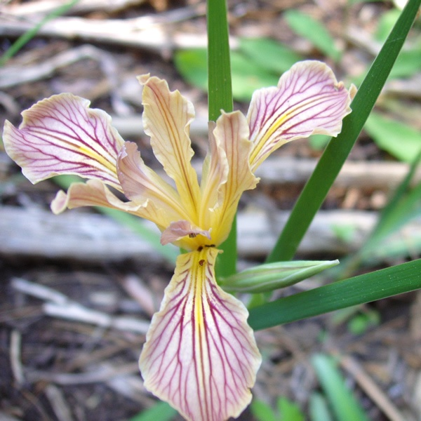

Iris hartwegii
Common name
Hartweg's iris
Family
Iridaceae
Family common name
Iris family
Blooms
May - July
Habitat
Shaded, dry areas in foothill woodland and mixed coniferous forests. below 7600'.
Subspecies
Four subspecies have been named
Range Map